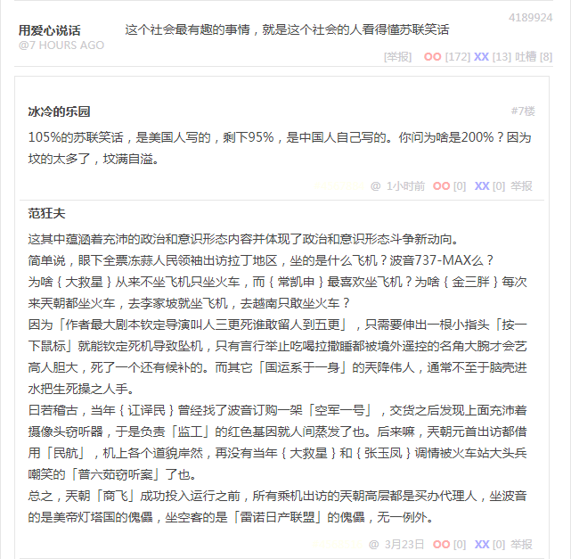

段子 4189924
这个社会最有趣的事情，就是这个社会的人看得懂苏联笑话
105%的苏联笑话，是美国人写的，剩下95%，是中国人自己写的。你问为啥是200%？因为坟的太多了，坟满自溢。
这其中蕴涵着充沛的政治和意识形态内容并体现了政治和意识形态斗争新动向。
简单说，眼下全票冻蒜人民领袖出访拉丁地区，坐的是什么飞机？波音737-MAX么？
为啥大救星从来不坐飞机只坐火车，而常凯申最喜欢坐飞机？为啥金三胖每次来兲朝都坐火车，去李家坡就坐飞机，去越南只敢坐火车？
因为「作者最大剧本钦定导演叫人三更死谁敢留人到五更」，只需要伸出一根小指头「按一下鼠标」就能钦定死机导致坠机，只有言行举止吃喝拉撒睡都被境外遥控的名角大腕才会艺高人胆大，死了一个还有候补的。而其它「国运系于一身」的兲降伟人，通常不至于脑壳进水把生死操之人手。
曰若稽古，当年讧译民曾经找了波音订购一架「空军一号」，交货之后发现上面充沛着摄像头窃听器，于是负责「监工」的红色基因就人间蒸发了也。后来嘛，兲朝元首出访都借用「民航」，机上各个道貌岸然，再没有当年大救星和张玉凤调情被火车站大头兵嘲笑的「普六茹窃听案」了也。
总之，兲朝「商飞」成功投入运行之前，所有乘机出访的兲朝高层都是买办代理人，坐波音的是美帝灯塔国的傀儡，坐空客的是「雷诺日产联盟」的傀儡，无一例外。
补充
参考《知乎问答№273：甘肃电视台拍摄的《肋巴佛传奇》怎么看？》，谁知道本朝立国前夕，「三区革命领导人」乘坐的那架坠机是什么型号，制造商是谁？
之前九省通衢「军网最黄黄网最军」上面就有红色基因不打自招的爆料，说为啥不趁美帝灯塔国大统领访华时将其座驾击落。共识很简单，「美帝灯塔国不缺大统领，挂掉一个补上一个」，而我中华兲朝上国就不一样，深居简出惜命如金的才是「真·元首」，其它都是幕后黑手扶持的买办代理人，一切行动听指挥，理解的要执行，不理解的也要执行，在执行中加强理解。
当年坠机完蛋的名角大腕有很多，党国公开媒体报道过的就有锤镰帮叶挺刮民党戴笠这种。那时候并非科技昌明民智大开，飞机操控系统还是机械电子装备，若是「激化矛盾制造冲突增加剧情跌宕起伏程度」还得搭上混入机组成员的忠诚的革命战士。
远不如现在，赛博朋克大行于世，每个会飞的家伙言行举止吃喝拉撒睡都被信息技术神童大少爷遥控。只需要莫斯科、华盛顿、巴黎一个眼色，忠诚的贵种战士就会伸出一根手指头（点一下鼠标）以见证「贱种对力量一无所知」，然后天上的飞机哗哗的摔，地下的莫名惊诧人民群众就会钦定死机。